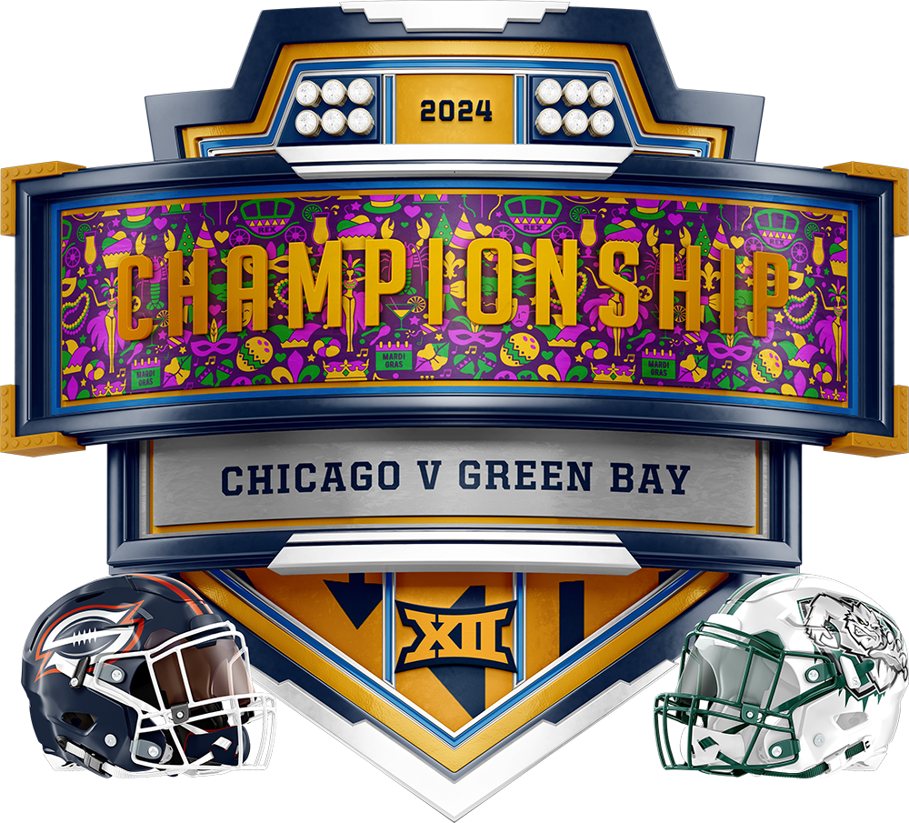

The 2024 season marks the 12th year of intense competition in the GLFL fantasy league. The action kicked off on Thursday, September 5th, with an electrifying matchup between last year’s champions, the Milwaukee Mustangs, and their fierce division rivals, the Cleveland Gladiators. With Milwaukee favored by 9 points, they lived up to the hype, pulling off a decisive 171-147 win that set the stage for what would be a rollercoaster of a season.
The season’s journey culminated on Monday, December 30th, in a thrilling Lakefront Bowl showdown between the Green Bay Blizzard and the Chicago Slaughter. In a come-from-behind performance, the Blizzard claimed the Lakefront Bowl with a 233-195 victory, cementing their place in league history with their second championship in three seasons
The Vegas Knight Hawks made a notable change by bringing back their original GM, Dave Nguyen, who previously held the position in 2012, following the retirement (once again) of Ashley Coppersmith.
Northern Arizona opted for a fresh start after parting ways with Dan Shilts, who was unexpectedly fired despite leading the team to two consecutive Lakefront Bowl appearances. They turned to Jason Richmond, a familiar face who last served as GM of Miami in 2012.
In Cleveland, the franchise decided it was time for a change, moving on from Bruce Coppersmith after an impressive tenure that began in 2013. They appointed Josh Thurmer to take the reins moving forward.
Cedar Rapids saw a shift as well, ending Michael Arroyo’s eight-year run as GM. They brought back Mitch Smith, who originally served as their first GM back in 2012.
Lastly, the Miami Inferno decided to move in a different direction by parting ways with Adam Levetzow after two seasons. They rehired Richard Head, the GM who led them to a championship back in 2019, hoping to recapture that past success.
The 2024 draft celebrated the 12th annual assembly of GLFL General Managers, a crucial event where teams meticulously selected new talent to strengthen their rosters. Conducted online on Tuesday, September 5, 2024, at 6:00 PM CST, the draft kicked off with the Vegas Knight Hawks holding the prestigious first pick. They made a bold move by selecting 2023 MVP Christian McCaffrey from San Francisco, setting an exciting tone for the season to come.
| Pick | GLFL Team | Player | POS | NFL Team |
|---|---|---|---|---|
| 1 | Vegas | Christian McCaffrey | RB | SF |
| 2 | Boston | Bijan Robinson | RB | ATL |
| 3 | Green Bay | Breece Hall | RB | NYJ |
| 4 | Cedar Rapids | CeeDee Lamb | WR | DAL |
| 5 | Miami | Tyreek Hill | WR | MIA |
| 6 | Brooklyn | Amon-Ra St. Brown | WR | DET |
| 7 | Cleveland | Ja'Marr Chase* | WR | CIN |
| 8 | Chicago | Justin Jefferson | WR | MIN |
| 9 | Philadelphia | Saquon Barkley | RB | PHL |
| 10 | Los Angeles | Jonathan Taylor | RB | IND |
| 11 | Northern Arizona | A.J. Brown | WR | PHL |
| 12 | Milwaukee | Puka Nacua | WR | LAR |
*MVP
The 2024 season, spanning 14 weeks with a total of 168 games, kicked off on the Thursday night following Labor Day, maintaining its tradition as the league's opening night. Each team engaged in two matchups against division rivals and one against all other teams unless subject to flex scheduling in the last week.
Building on the experimentation from 2022, the league continued using individual defensive positions (IDP) in place of team defenses, expanding the starting lineup to three defensive slots this season. Additionally, the league reversed last year’s shift to non-designated offensive positions, reinstating a more traditional offensive lineup with specific starting positions.
Continuing a trend from past seasons, the league once again embraced flex scheduling during the final week of the regular season. This strategic approach allowed the league to make adjustments to the matchups, impacting divisional championships and playoff seeding.
| East | W | L |
|---|---|---|
| (3) Boston | 9 | 5 |
| Brooklyn | 7 | 7 |
| Philadelphia | 6 | 8 |
| Miami | 5 | 9 |
| Central | W | L |
|---|---|---|
| (1) Milwaukee | 10 | 4 |
| (6) Chicago | 8 | 6 |
| (7) Cleveland | 7 | 7 |
| Cedar Rapids | 2 | 12 |
| West | W | L |
|---|---|---|
| (2) Los Angeles | 10 | 4 |
| (4) Green Bay 🏆 | 9 | 5 |
| (5) Vegas | 7 | 7 |
| Northern Arizona | 4 | 10 |
The journey through the postseason in the 2024 season commenced on December 12, 2024, reaching its pinnacle with the Lakefront Bowl on December 30st. Seven teams earned the right to partake in the playoffs, with divisional winners securing playoff spots, while the remaining four slots were claimed by the best non-division winning teams. Offering a respite only to the #1 seed in round 1, the rest of the matchups unfolded with the #2 seed facing the #7, the #3 seed clashing with the #6 seed, and the #4 seed challenging the #5 seed on the opening weekend. The playoff format emphasized home teams by endowing them with a 5-point bonus at the start of each week.
The opening act of the 2024 playoff spectacle unfolded on December 12, 2024. Last year's champion, Milwaukee Mustangs cruised through the second half of the season and thus claimed the top seed, earning a bye and patiently awaited the outcome of Round 1.
Gladiators’ Playoff Hopes Crushed by Dominant Wildcats
The Cleveland Gladiators clawed their way into the playoffs as the 7th seed for the second straight year, narrowly edging out Brooklyn to secure the final coveted spot. But their reward was a daunting showdown with the West Division champions, the Los Angeles Wildcats—a team riding high as on of the league’s top-scoring juggernauts.
The matchup promised fireworks between the league’s two highest-scoring offenses, but only the Wildcats delivered. Cleveland stumbled to a playoff-low 148 points, while Los Angeles put on a clinic, storming to a commanding 226-148 victory. The loss marked the Gladiators’ second defeat to the Wildcats this season and extended their losing streak against Los Angeles to seven games, dating back to 2019, including postseason clashes.
Josh Allen led the charge for the Wildcats with a monstrous 70-point performance, propelling his team to its seventh consecutive win and solidifying their position as the team to beat in the 2024 playoffs.
Chicago Secures Historic First Playoff Win Over Vegas
In the second playoff showdown, the #5 seed Vegas Knight Hawks squared off against the #6 seed Chicago Slaughter, who were still chasing their first-ever postseason victory. Chicago entered the season with a bang, setting scoring records en route to a 5-2 start. However, a rough 2-4 finish had them limping toward the postseason. A pivotal Week 14 win over Northern Arizona ultimately punched their ticket, earning them back-to-back playoff appearances.
The Knight Hawks, on the other hand, stumbled into the playoffs, losing three of their final four games and becoming arguably the lowest-scoring playoff team in league history. Their offensive struggles carried into the postseason, with QB Tua Tagovailoa managing just 15 points as the Knight Hawks posted a meager 170 in the first round.
Chicago capitalized, putting up 208 points and earning their long-awaited first playoff victory after five previous postseason failures. Lamar Jackson starred with a dazzling 68-point performance, while Jerry Jeudy delivered his best game of the season, adding 28 points to seal the win.
Blizzard Outlast Brawlers in Record-Breaking Shootout
The weekend’s finale featured the #4 seed Green Bay Blizzard visiting the #3 seed Boston Brawlers in a clash of evenly matched 9-5 teams. It was the closest talent pairing of the first round, and it delivered an unforgettable showdown.
For Boston, this season marked a triumphant return to relevance. Making just their second playoff appearance in GM Cholka's tenure—the Brawlers celebrated their best campaign in franchise history, notching a record nine wins and division title. They didn’t hold back, unleashing a monstrous 225 points, breaking Northern Arizona’s playoff scoring record from the prior season. Yet, heartbreak followed as Boston’s historic effort was overshadowed by an even more jaw-dropping performance from Green Bay.
The Blizzard exploded for 260 points—a new league playoff record—to claim the victory and advance to the next round. The result marked the end of a storybook season for GM Chris Cholka and the Brawlers.
Boston’s stars showed up, with wide receivers Davante Adams (49 points) and CeeDee Lamb (33 points) leading the charge. Unfortunately, QB Matthew Stafford’s underwhelming performance, producing just half his projected points, left the team short.
Green Bay, meanwhile, rode the brilliance of Jared Goff, who shattered the individual playoff scoring record with a staggering 84-point outing. Goff’s heroics, combined with Mike Evans’ 42 points, powered the Blizzard’s high-octane offense. After a disappointing 6-8 season last year, Green Bay is back in championship form, with their sights set on the ultimate prize.
Blizzard Upset Mustangs to Advance to Lakefront Bowl
Round 2 on December 19, 2024, brought a thrilling matchup between the top-seeded Milwaukee Mustangs and the #4 seed Green Bay Blizzard. The game marked the first postseason clash between Milwaukee GM Michael Bautch and his son, Green Bay GM Mason Bautch, adding an extra layer of intrigue to an already intense rivalry. Green Bay, riding a wave of recent dominance over Milwaukee with wins in six of their last eight meetings, continued their strong form. Behind standout performances from Jared Goff (50 points) and De’Von Achane (38 points), the Blizzard jumped out to an early lead on Thursday night. Although the Mustangs narrowed the gap late, Green Bay maintained control and sealed a 207-182 victory. The win secured the Blizzard’s third Lakefront Bowl appearance—and second in the past three seasons.
For the defending champion Mustangs, the loss was a bitter end to their season. Patrick Mahomes led the charge with 43 points, but his supporting cast failed to deliver, collectively falling 30% short of their projections. The reigning champs, who entered the postseason as favorites, stumbled in their only playoff game, leaving their quest for a repeat unfulfilled.
Slaughter Surge Past Wildcats to Reach First Lakefront Bowl
The second playoff matchup of the weekend saw the #6 seed Chicago Slaughter travel to Los Angeles to face the 2nd-seeded Wildcats. Fresh off their first-ever playoff victory, Chicago squared off against Los Angeles for the third time this season, having split the regular-season series 1-1. Historically, Los Angeles has dominated this matchup, boasting a lopsided 15-2 record dating back to the GLFL’s inaugural season in 2012. However, Chicago snapped a nine-game losing streak in Week 5, setting the stage for this high-stakes playoff clash.
In a shocking turn of events, Chicago dismantled the Wildcats with a resounding 233-133 victory—the second-largest margin in GLFL playoff history. The Slaughter’s offensive trio of Lamar Jackson, Justin Jefferson, and Keenan Allen accounted for an astounding 119 points, driving the team to its first-ever Lakefront Bowl appearance. For Los Angeles, another stellar season ended in heartbreak. Despite securing a league-best 74% regular-season win rate since GM Bautch’s return, the Wildcats have yet to win a GLFL title, reaching the championship game only once during her second tenure. Notably, in each of the past four seasons, the team that eliminated Los Angeles has gone on to the Lakefront Bowl.
Blizzard Claim 2024 Lakefront Bowl in Epic Showdown
New Orleans, Louisiana hosted the 2024 Lakefront Bowl which ended on December 30, 2024, featuring the #4 seed Green Bay Blizzard and the #6 seed Chicago Slaughter. Green Bay entered the matchup as slight 6-point favorites, aiming for their second championship under GM Mason Bautch’s leadership, having previously secured the title in 2022. For Chicago, the game capped off a historic season that saw GM Darrien Clay achieve multiple firsts, including the franchise’s inaugural playoff victory and conference championship.
Despite their underdog status, the Slaughter historically thrived against Green Bay, winning four of their previous eight meetings, including three of the last four against Bautch’s Blizzard. True to form, Chicago came out swinging, with Lamar Jackson and Derrick Henry combining for a massive 82 points on Wednesday night, setting the tone for what would become the longest matchup in GLFL history. The Slaughter held the lead through Sunday afternoon, buoyed by consistent scoring from their roster.
Green Bay, however, had their own heroes waiting to rise. Tee Higgins erupted for a season-high 48 points, supported by Mike Evans’ 36, cutting the Slaughter’s lead to 36 points heading into Monday night. With Jared Goff left to play, the Blizzard’s hopes rested squarely on their star quarterback. Goff delivered in spectacular fashion, posting 51 points to complete the comeback and secure a 194-233 victory for Green Bay. The win marked the Blizzard’s second Lakefront Bowl in three seasons, solidifying their place as a league powerhouse.
The Milwaukee Mustangs continued their stranglehold on the Central Division, claiming their sixth division title, solidifying their status as perennial powerhouses. Meanwhile, the Los Angeles Wildcats celebrated their fifth division crown, cementing themselves as a force to beat. Over in the East, the Boston Brawlers claimed the throne for their first division triumph.
The spotlight of the 2024 season belonged to seventh overall pick wide receiver Ja’Marr Chase, who earned the coveted GLFL MVP honor. Chase was nothing short of spectacular, amassing a league-best 409 points. His impact on the Cleveland Gladiators was undeniable, as his stellar play fueled a late-season surge of four consecutive wins, propelling the Gladiators into the final playoff spot.
High expectations loomed over the defending champions, the Milwaukee Mustangs, but GM Michael Bautch proved once again he thrives under pressure. Bautch guided the Mustangs to a league-best 10-4 record, securing the top seed in the playoffs. His outstanding leadership earned him the GM of the Year award—his third such honor, breaking a tie with Cory Colvin of Brooklyn for the most in GLFL history.
The Green Bay Blizzard clinched their third conference title along with their second Lakefront Bowl, reclaiming their status as a perennial powerhouse. On the other side, the Chicago Slaughter made history by capturing their first-ever conference championship, finally breaking through after years of postseason heartbreak. Their long-awaited trip to the Lakefront Bowl marks a turning point for a franchise that had been plagued by playoff struggles.